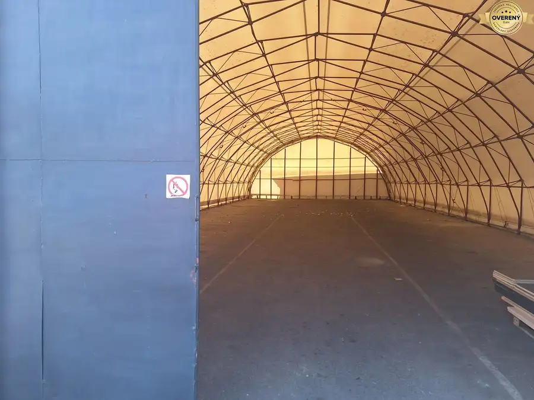
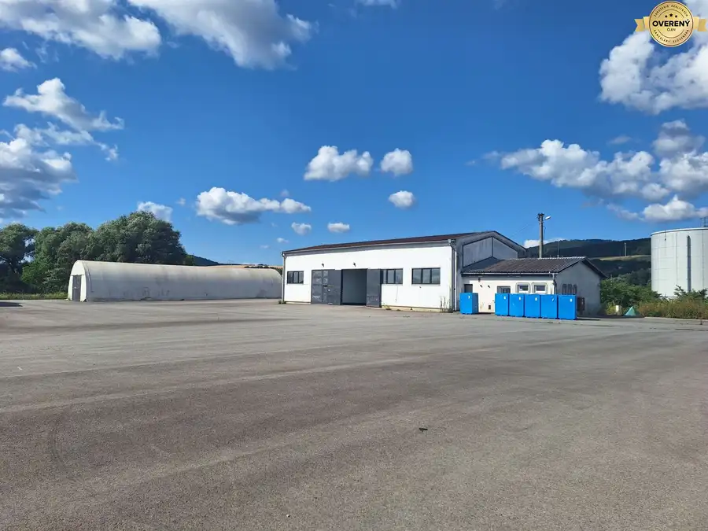
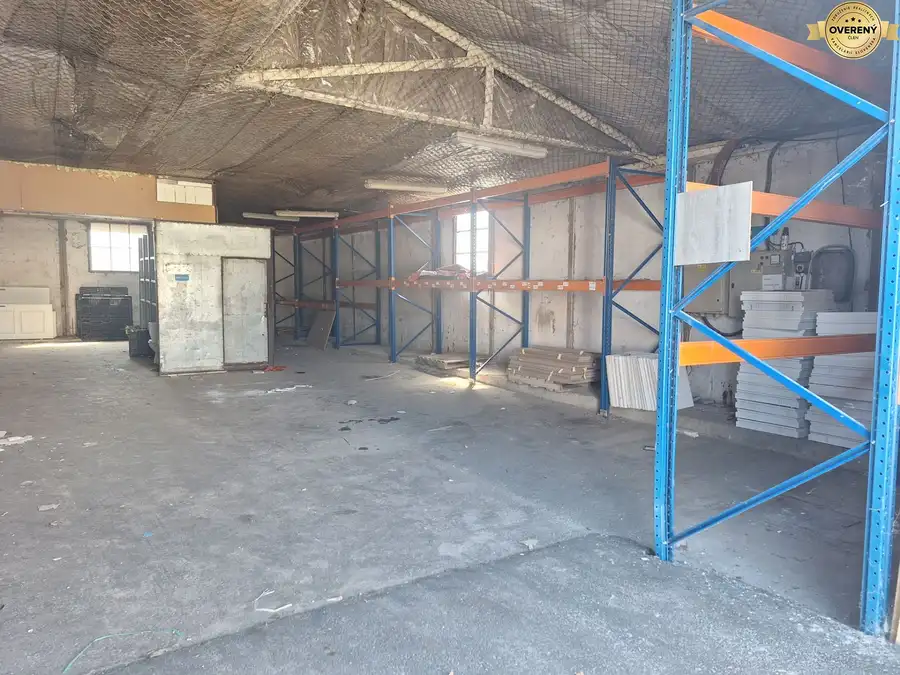
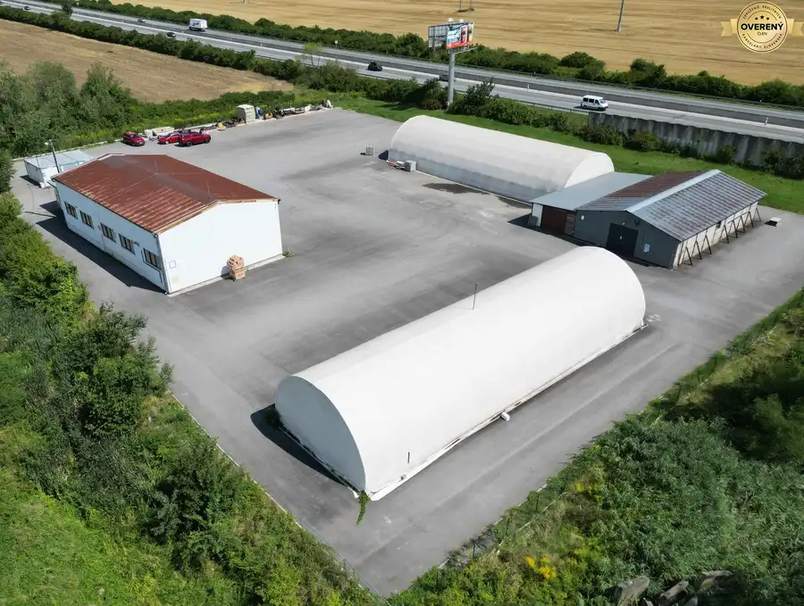
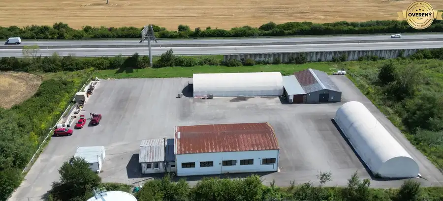
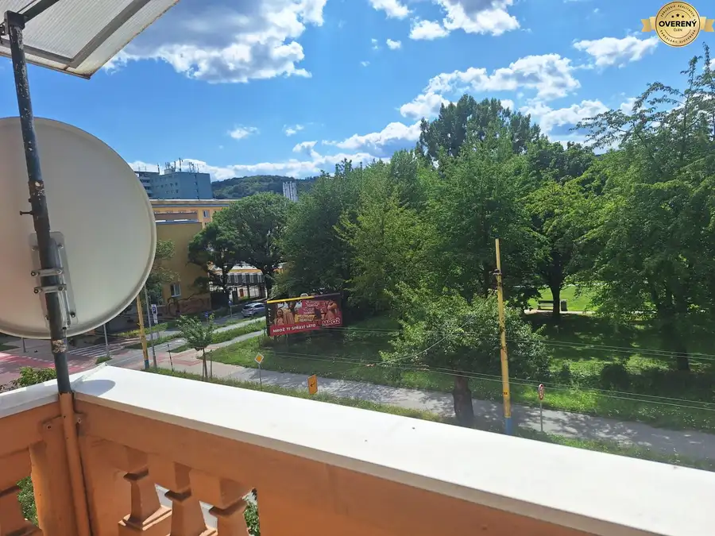
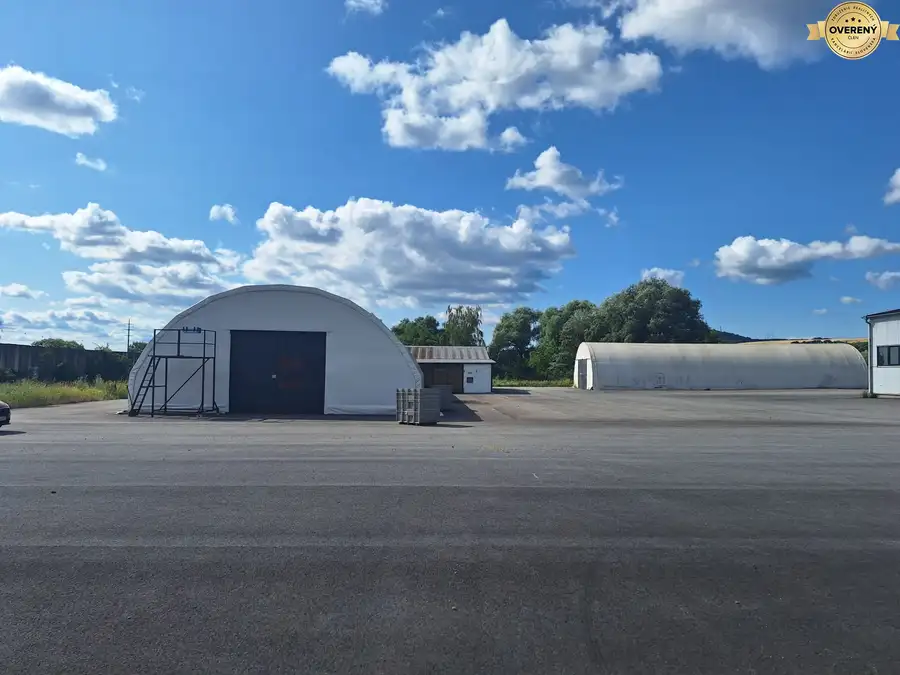

Ponúkame na PRENÁJOM hala oblúková 255m2, Ličartovce
Ličartovce







- Plocha255 m²
- Poschodie0.
- Stavpôvodný
O nehnuteľnosti
Ponúkame na prenájom oblúková hala - plachta / sklad o výmere 255m2, priemyselný areál Ličartovce.
Hala má betónovu podlahu, rozmer haly je 8,5 x 30m, svetlá výška 5m a rozmer vstupnej brány V/Š je 3,4 x 4m.
Areál sa nachádza medzi Košicami a Prešovom na ploche o výmere 50.000m2, v okrajovej časti obce Ličartovce.
Priame napojenie na cestu 1 triedy, zjazd na diaľnicu D1 do 3min., nákladná vlaková stanica do 4min, to všetko dáva
danej zóne výborne predpoklady pre logistiku - koordinácia, zosúladenie, prepojenie, zvýšenie pružnosti, optimalizácia
toku materiálu, výrobkov, polovýrobkov, zásielok...z hľadiska uspokojenia zákazníka za najnižšie vynaložené náklady.
Skladba voľnej plochy, ktoré je možné prenajať aj samostatné:
- Spevnená plocha / komunikácie 6 260m2
- Murovaná hala + kancelárie 336m2
z toho kancelárie + kotolňa 60m2 / 7m x 8,5m /
z toho hala 276m2 / 23m x 12m, výška 5,6m, brána V/Š 3,6 x 3,6 /
- Plechová hala 180m2 / 10m x 18m, výška 3m , brána V/Š 3 x 3m / - bez napojenia sa na siete
- Oblúková hala - plachta 255m2, / 8,5 m x 30m, výška 5m, brána V/Š 3,4 x 4m / - bez napojenia sa na siete
- Oblúková hala - plachta 330m2 / 11m x 30m, výška 5,4m , brána V/Š 3,4 x 4m / - bez napojenia sa na siete
Dosiahnite čo najkratšiu disponibilitu, okamžitú prístupnosť - použiteľnosť, výbornou strategickou polohou. Priame prepojenie na diaľnicu D1 na juh Košice - Maďarsko, Ukrajina, západ Poprad-Ružomberok, nadväzujúce úseky Žilina, Bratislava, prepojenie rýchlostnej cesty R4 obchvat , prinesie ďalšie kvalitné napojenia sa cez Svidník do Poľska.
Areál v súčasnosti disponuje: logistická hala, administratíva, sklady, garáž, oblúkové plášťové sklady.
Areál disponuje IS - elektrina, plyn, voda, kanál formou centrálnej čističky.
V prípade potreby možnosť aj riešenia studne.
Areál má dostatok parkovacích miest pre kamióny ako aj pre osobné automobily.
Možnosť kooperácie logistiky, so súčasnou firmou v areáli.
V prípade ak hľadáte halu / sklad k prenájmu neváhajte ma kontaktovať.
Cena nehnuteľnosti je vrátane provízie, ktorá v sebe zahŕňa kompletný právny servis a služby spojené s prenájmom.
Timea Horňáková
Parametre
- Celková rozloha
- 6260 m²
- Úžitková plocha
- 255 m²
- Poschodie
- prízemie
- Stav
- pôvodný
- Status
- aktívne
- Kúpeľňa
- nie
- Postavené z
- tehla
- Energetický certifikát
- nie
- Dátum zverejnenia
- 2026-07-29
Kde to je
Mohlo by Vás zaujímať

BytNové 163 000 €REZERVOVANÝ 2 izbový byt, 17.novembra, Prešov Prešov 2-izbový50 m²2. podlažie Nebytové priestoryNové 2 350 €Ponúkame na PRENÁJOM hala a kancelárie, 336m2, Ličartovce Ličartovce 336 m²
Nebytové priestoryNové 1 490 €Ponúkame na PRENÁJOM hala oblúková 330m2, Ličartovce Ličartovce 330 m²